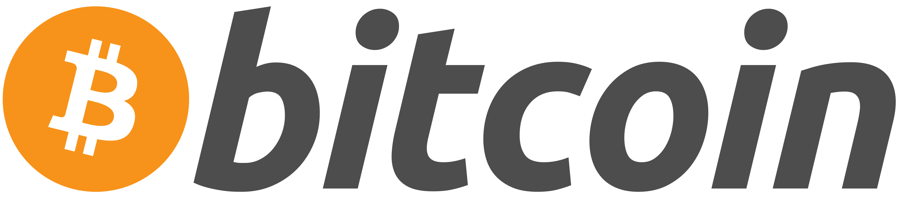

- Вы не представились системе
- Обсуждение
- Вклад
- Создать учётную запись
- Войти
Биткоин
Битко́йн (англ. Bitcoin, от bit — «бит» и coin — «монета») — пиринговая платёжная система, использующая одноимённую единицу для учёта операций и одноимённый протокол передачи данных. Для обеспечения функционирования и защиты системы используются криптографические методы. Вся информация о транзакциях между адресами системы доступна в открытом виде[3]. Минимальная передаваемая величина (наименьшая величина дробления) — 10−8 биткойна — получила название «сатоши» в честь создателя Сатоси Накамото, хотя сам он использовал в таких случаях слово «цент»[4]. Электронный платёж между двумя сторонами происходит без посредников и необратим — нет механизма отмены подтверждённой операции (включая случаи, когда платёж был отправлен на ошибочный или несуществующий адрес, или когда транзакция была подписана закрытым ключом, который стал известен другим лицам). Средства никто не может заблокировать (арестовать), даже временно, за исключением владельца закрытого ключа (или лица, которому он стал известен). Но предусмотренная технология мультиподписи позволяет привлечь третью сторону (арбитра) и реализовать «обратимые транзакции». При помощи специального языка сценариев есть возможность реализовать и другие варианты умных контрактов[5][6][7], однако он не доступен из графического интерфейса и не полон по Тьюрингу, в отличие от более новых блокчейновых систем (см. Ethereum[8]). Разные авторы по-разному классифицируют биткойны. Чаще всего встречаются варианты: криптовалюта[9], виртуальная валюта[9][10][11], цифровая валюта[12][13], электронная наличность[14]. Биткойны могут использоваться для обмена на товары или услуги у продавцов, которые согласны их принимать. Обмен на обычные валюты происходит через онлайн-сервис обмена цифровых валют, другие платёжные системы, обменные пункты или непосредственно между заинтересованными сторонами. Комиссия за проведение операций назначается отправителем добровольно, размер комиссии влияет на приоритет при обработке транзакции. Обычно программа-клиент подсказывает рекомендуемый размер комиссии. Транзакции без комиссии возможны и также обрабатываются, однако не рекомендуются, поскольку время их обработки неизвестно и может быть довольно велико. Одна из главных особенностей системы — полная децентрализация: нет центрального администратора или какого-либо его аналога. Необходимым и достаточным элементом этой платёжной системы является базовая программа-клиент (имеет открытый исходный код). Запущенные на множестве компьютеров программы-клиенты соединяются между собой в одноранговую сеть, каждый узел которой равноправен и самодостаточен. Невозможно государственное или частное управление системой, в том числе изменение суммарного количества биткойнов. Заранее известны объём и время выпуска новых биткойнов, но распределяются они относительно случайно среди тех, кто использует своё оборудование для вычислений[15], результаты которых являются механизмом регулирования и подтверждения правомочности операций в системе «Биткойн» (см. метод доказательства выполнения работы[16]).
| Биткоин | |
|---|---|
|  | |
| Тип | Платежная система |
| Автор | Сатоси Накамото |
| Разработчик | Сатоси Накамото |
| Написана на | С++ |
| Операционная система | Windows, GNU/Linux[d] и macOS |
| Языки интерфейса | Несколько элементов |
| Первый выпуск | 3 января 2009 года |
| Последняя версия | 0.15.1 (11 ноября 2017) |
| Лицензия | лицензия MIT |
| Сайт | bitcoin.org |
Биткоин
Битко́йн (англ. Bitcoin, от bit — «бит» и coin — «монета») — пиринговая платёжная система, использующая одноимённую единицу для учёта операций и одноимённый протокол передачи данных. Для обеспечения функционирования и защиты системы используются криптографические методы. Вся информация о транзакциях между адресами системы доступна в открытом виде[3]. Минимальная передаваемая величина (наименьшая величина дробления) — 10−8 биткойна — получила название «сатоши» в честь создателя Сатоси Накамото, хотя сам он использовал в таких случаях слово «цент»[4]. Электронный платёж между двумя сторонами происходит без посредников и необратим — нет механизма отмены подтверждённой операции (включая случаи, когда платёж был отправлен на ошибочный или несуществующий адрес, или когда транзакция была подписана закрытым ключом, который стал известен другим лицам). Средства никто не может заблокировать (арестовать), даже временно, за исключением владельца закрытого ключа (или лица, которому он стал известен). Но предусмотренная технология мультиподписи позволяет привлечь третью сторону (арбитра) и реализовать «обратимые транзакции». При помощи специального языка сценариев есть возможность реализовать и другие варианты умных контрактов[5][6][7], однако он не доступен из графического интерфейса и не полон по Тьюрингу, в отличие от более новых блокчейновых систем (см. Ethereum[8]). Разные авторы по-разному классифицируют биткойны. Чаще всего встречаются варианты: криптовалюта[9], виртуальная валюта[9][10][11], цифровая валюта[12][13], электронная наличность[14]. Биткойны могут использоваться для обмена на товары или услуги у продавцов, которые согласны их принимать. Обмен на обычные валюты происходит через онлайн-сервис обмена цифровых валют, другие платёжные системы, обменные пункты или непосредственно между заинтересованными сторонами. Комиссия за проведение операций назначается отправителем добровольно, размер комиссии влияет на приоритет при обработке транзакции. Обычно программа-клиент подсказывает рекомендуемый размер комиссии. Транзакции без комиссии возможны и также обрабатываются, однако не рекомендуются, поскольку время их обработки неизвестно и может быть довольно велико. Одна из главных особенностей системы — полная децентрализация: нет центрального администратора или какого-либо его аналога. Необходимым и достаточным элементом этой платёжной системы является базовая программа-клиент (имеет открытый исходный код). Запущенные на множестве компьютеров программы-клиенты соединяются между собой в одноранговую сеть, каждый узел которой равноправен и самодостаточен. Невозможно государственное или частное управление системой, в том числе изменение суммарного количества биткойнов. Заранее известны объём и время выпуска новых биткойнов, но распределяются они относительно случайно среди тех, кто использует своё оборудование для вычислений[15], результаты которых являются механизмом регулирования и подтверждения правомочности операций в системе «Биткойн» (см. метод доказательства выполнения работы[16]).